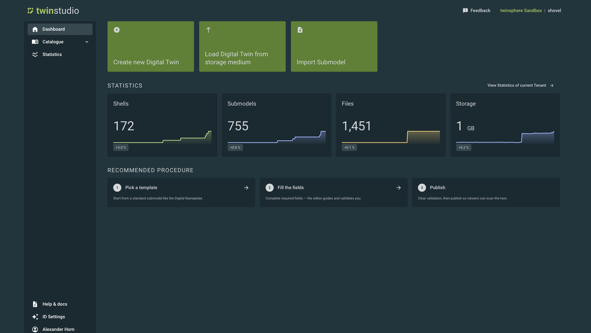

twinstudio
twinstudio is the editor of the twinsphere suite. It is a web application for creating, editing and organising the content of your twinsphere tenant: digital twins, submodels, concept descriptions and files.
twinstudio 1.0 has been available since October 2026. Nothing has to be installed. You sign in with your twinsphere ID in a browser.

What you can do with it
- Create a digital twin from scratch, by duplicating an existing one, or from a type twin.
- Fill in its data. twinstudio guides you through the submodel templates and checks your entries against the AAS metamodel while you work.
- Publish it to your twinsphere tenant, where the Viewer and the API can use it.
- Organise your content. The catalogue lists twins, submodels, concept descriptions, drafts and files, and lets you filter, export, duplicate and delete them.
- Watch your usage. The statistics page shows how your data has grown over time.
Where to go next
| I want to … | Read |
|---|---|
| Create and edit a digital twin | Twin Builder |
| Find, export or delete content | Catalogue |
| Change my language, switch tenant, or set up ID patterns | General features |
| See how my tenant has grown | Statistics |
| Know what changed in which version | Release notes |
For more information about the twinsphere suite, visit our twinsphere landing page ⧉.